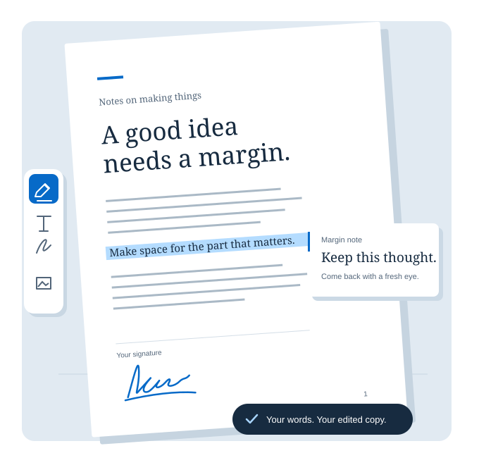

PDFs, under
your control.
A place to read closely, mark what matters, and finish the form. Quire brings your PDF work together in Chrome.
Add to Chrome Available on the Chrome Web Store. Free to use; no account needed.
Your reading, your notes, your next step. In one document.
Read with room
to think.
Settle into a clean view of the page. Search for a phrase, browse the thumbnails, or use the document’s outline to get straight to the part you need.
Put your thinking
on the page.
Highlight a passage, add a note, or sketch in the margin. Add text and images, draw your signature, and fill the form fields already in your PDF.
Keep the copy
you meant to.
Save an edited copy with your work inside it. Your local library keeps documents close, and recovery helps you pick up unfinished work on this computer.
Make room for
the right pages.
Put pages in the order you need, remove a page, bring in another PDF, or download just the pages you select.
Quire edits annotations and existing PDF form fields. It doesn’t replace original page text or provide OCR, secure redaction, or certificate-based signing. XFA forms aren’t supported. A signature is a visual mark.
Your documents
stay here.
Quire works on your computer. Your library, recovery copies, and saved signatures stay in your browser profile. Download a separate copy whenever you need one.
No account, document upload, analytics, or advertising. Opening a PDF link asks for access to that website. For sign-in pages or redirects, download the PDF first and open the file.
Read the privacy policyYour next PDF, handled.
A focused reader and annotation editor for the documents in front of you.